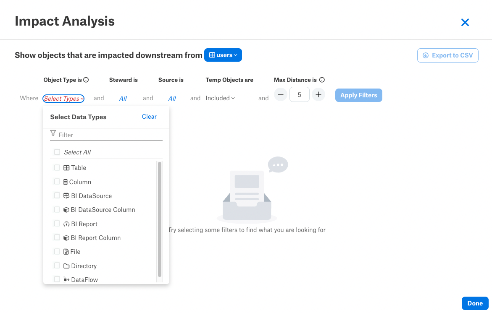
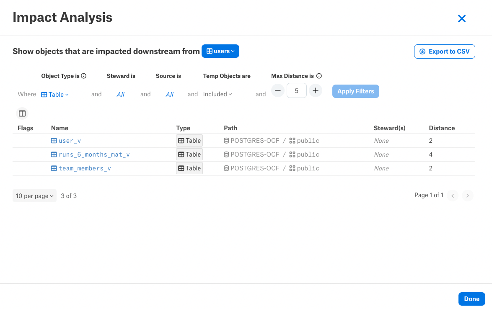
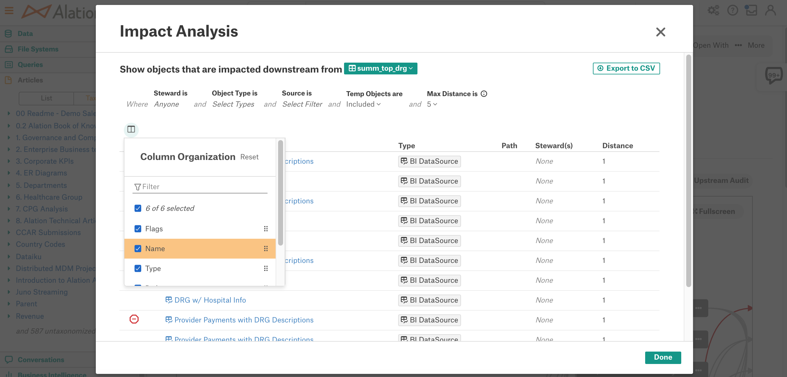
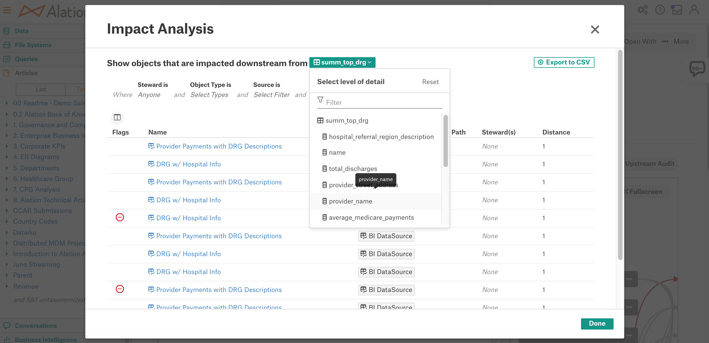
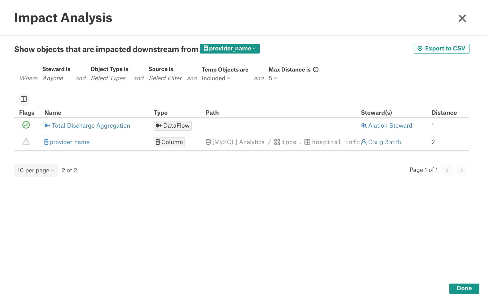
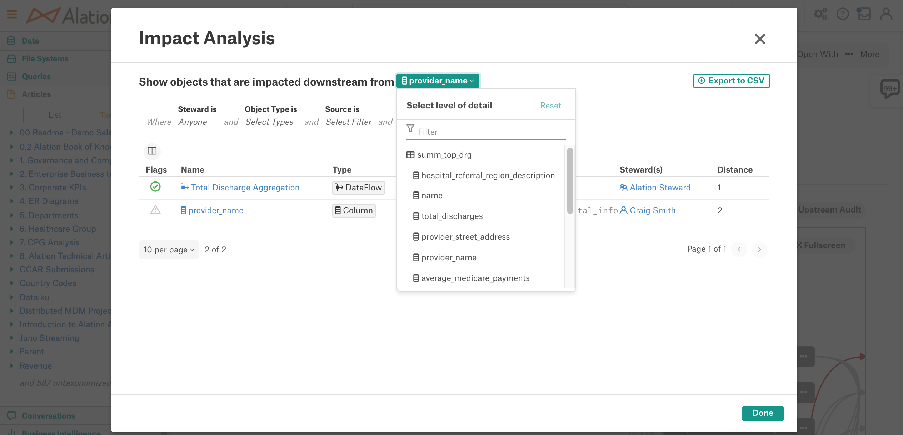

Lineage Impact Analysis¶
Alation Cloud Service Applies to Alation Cloud Service instances of Alation
Customer Managed Applies to customer-managed instances of Alation
Alation Catalog users can further explore lineage data by viewing Lineage Impact Analysis reports. Lineage Impact Analysis reports list the downstream or upstream data objects in a tabular format.
To view the downstream or upstream report, click the corresponding button on top right of the Lineage diagram on the Lineage tab of a Table or a BI Report:
Click View Impact Analysis to view the objects downstream from the main object
Click View Upstream Audit to view the objects upstream from the main object.
Note
The main object is the object from whose catalog page you are viewing the Lineage diagram.
Both the Impact Analysis report and the Upstream Audit reports are initially blank. To see information, you must first select one or more filters from the top of the page, as follows:

Object Type is: Filters to the specified object type(s). You must select at least one object type.
Steward is: Filters to objects for which the selected user is a Steward. The default is All.
Source is: Filters to objects that are in the selected source. This automatically applies the object type filter in order to display object types that can exist as children of the selected source object. The default is All.
Temp objects are: Allows the user to include or exclude temp objects from the table. The default is included.
Max distance is: Specifies how deep to traverse the lineage relationships. You can specify a distance value from 1 to 50, or you can specify -1 to indicate all distances should be included.
Note
Traversing deeper into lineage may increase the number of objects to be retrieved and may increase the report loading time.
When you have set your filters, click Apply Filters.
The Impact Analysis report and the Upstream Audit report display the following information:

Flags: Endorse, Warn or Deprecate flags currently applied to the data object.
Note
Objects with deprecation propagated from the source objects upstream will display the Warning flag. The Deprecation flag is displayed only for objects to which it is applied directly.
Name: name of the data object found downstream (Impact Analysis Report) or upstream (Upstream Audit Report) from the main node. You can open the catalog page of the corresponding object by clicking on its name.
Type: object type, such as Table, Column, Dataflow, or BI Report.
Path: path to the object in a data source, if applicable. The path shows all parent objects up to the data source level, for example: [MySQL] Analytics / ipps / summ_top_drg / provider_street_address
Stewards: stewards assigned to the object
Distance: number of nodes, or lineage steps, between this object and the main object on the Lineage diagram
Customize the View of the Tabular Lineage Reports¶
You can customize the number and order of columns displayed in the tabular Lineage reports by excluding or including columns or by rearranging them. To modify the column display, use the Column Organization widget located left and above the table:
Select or clear the checkbox for a table column in order to include or exclude it.
Press on the highlighted column name and drag-and-drop it to a different place in the list to change the order of columns in the table.
Click Reset on top right of the widget to reset the table to the default view.
To close the Column Organization widget, click its icon again:

View the Report for Child Objects¶
When child columns are present for the table object, the Impact Analysis reports can be filtered to a specific child column. To view how a child column impacts the upstream or downstream lineage:
Select this child column from the list next to the main object name:
The table will be filtered to only include objects connected by lineage to the selected child object:
You can reset back to the main object by clicking Reset on the top right of the Select level of detail list:

Export the Lineage Reports to CSV¶
Click Export to CSV on top right of a report to export it to CSV.
The exported report contains only data matching the current filters.
Alation prepares the CSV file in the background. After the CSV file has been prepared, a unique download link will be emailed to your email address from the Alation server.
Enable or Disable Lineage Reports¶
The Lineage reports feature is available by default. It can be enabled or disabled in Admin Settings > Feature Configuration by a Server Admin.
To disable or enable:
In Admin Settings > Feature Configuration, locate the feature switch Lineage Impact Analysis and Upstream Audit and toggle it off or on.
Save the changes on the Feature Configuration page.
When the Lineage reports feature is disabled, the buttons View Impact Analysis and View Upstream Audit are not available on the Lineage diagram.